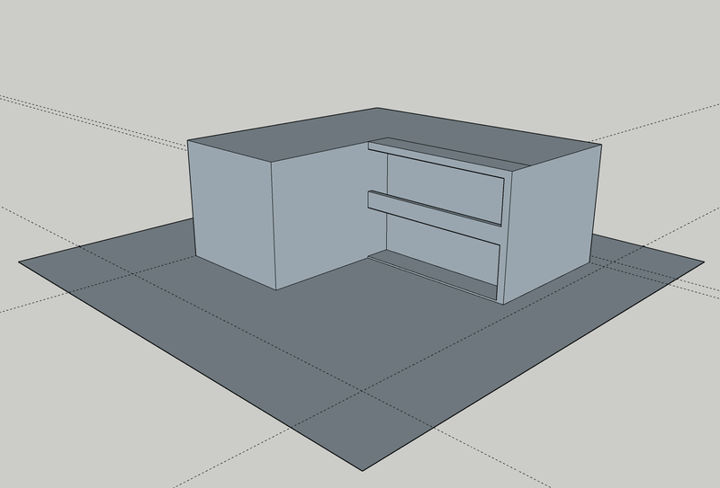
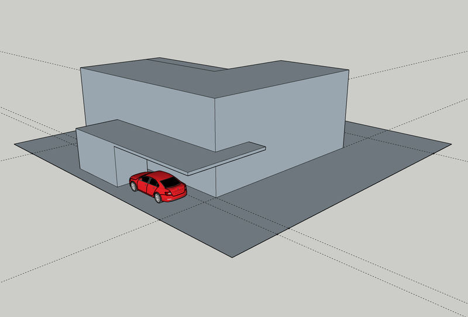

Ještě než jsem začal oslovovat architekty, sepsal jsem podrobné zadání projektu - soupis našich požadavků a představ, jak by měl náš dům vypadat. Tomu předcházel rozsáhlý průzkum. Strávil jsem desítky hodin googlením a pročítáním blogů, webů a diskuzí o stavbě domu, abych měl alespoň nějaký základní přehled, co v dnešní době frčí. Finální studie, která už je v tuto chvíli hotová, se neshoduje se vším, co je v tomto zadání uvedeno, ale schválně zde dávám zadání v původní podobě, abychom později mohli porovnat naše původní představy s řešením od architekta. Zadání je hodně detailní. Sepsal jsem zkrátka vše, co mě napadlo. K tomu jsem zkusil vytvořit i jednoduchý model domu ve SketchUp. Dům nakonec bude vypadat úplně jinak, ale to ukážu až v některém z dalších článků.
Kdo jsme
Jsme mladá 3-členná rodina. Aktuálně žijeme v malém bytě a rádi bychom postavili rodinný dům se zahradou.
Koho hledáme
Hledáme architekta a projektanta, který by nám vypracoval studii pasivního domu, návrh interiérů a následně projektovou dokumentaci, položkový rozpočet a dokumentaci pro provedení stavby. Ocenili bychom též pomoc při vyřizování stavebního povolení, žádosti o dotace, pomoc s výběrem dodavatelů, autorský dozor a podporu během realizace.
Časový plán
V roce 2017 jsme koupili stavební pozemek nedaleko Brna. V roce 2019 bychom chtěli začít plánovat projekt. V roce 2020 bychom rádi začali stavět. Na financování stavby bychom chtěli využít hypotéku.
Stavební pozemek
- Celkový obsah cca 700 m2
- Pozemek je orientován na severo-východ od příjezdové cesty
- Pozemek je mírně svažitý směrem k jiho-východu
- Příjezdová cesta je slepá ulice, u pozemku jsou zbudována 2 parkovací stání
- Geografický sever je na tomto místě odchýlen od katastrálního severu (Křovákovo zobrazení) o 6,1°
Základní představa
- Pasivní dům z vápenopískových cihel VPC se zateplením
- Optimalizace projektu v PHPP (Passive House Planning Package)
- Finanční rozpočet nemáme zatím pevně stanoven. Naším cílem je postavit dům, kde se nám bude skvěle bydlet a budeme se tam dobře cítit. Nepotrpíme si na zbytečný luxus, ale kvalita je pro nás velmi důležitá. Pokud máme v domě prožít půlku svého života, chceme, aby něco vydržel.
- Chtěli bychom využít dotaci Nová Zelená Úsporám.
- Přáli bychom si mít dostatečně velkou zahradu, a proto bychom chtěli dům situovat co nejvíce do severo-západního rohu a pokud možno snížit předepsaný odstup (6 m) domu od silnice na menší vzdálenost (4-5 m). To by se hodilo hlavně v případě, kdy by byl dům do tvaru L.
- Pokud by to bylo možné, chtěli bychom umístit přístřešek pro vozidlo přímo na hranici pozemku na severní straně. Některé domy v okolí to tak mají.
Základní podoba domu
- Patrový dům, jelikož pozemek není dostatečně velký pro přízemní dům.
- Vzhledem k dispozicím pozemku by se nám líbil dům do tvaru L, čímž by vzniklo na terase a v zahradě více soukromí, případně dům ve tvaru kvádru.
- Líbí se nám funkcionalistický styl, jednoduché pravoúhlé linie a tvary (nikoliv šikmé linie a zaoblené tvary), minimalismus, nadčasový design, plochá střecha, bílá fasáda bez zbytečných dekorací.
- Nechceme sedlovou střechu kvůli sníženému stropu v místnostech v horním patře.
- Dům by měl být bezbariérový (pokud nepočítáme schody do patra). Celá podlahová plocha by měla být ve stejné výškové úrovni. Rádi bychom se vyvarovali i schodů u vstupních dveří či vstupu na terasu.
- Stropní podhled jako obyčejný rovný strop bez dekorací, hran, podsvícení apod.
- Líbil by se nám přesah poschodí či střechy nad terasou (příp. i hlavním vchodem), který by vytvořil stín a úkryt před nepříznivým počasím.
- Líbila by se nám lodžie v patře.
- V obytných místnostech bychom chtěli velká okna, která prosvětlí interiér. V obývacím pokoji francouzská okna a posuvné bezprahové dveře na terasu (HS portál).
- Celý pozemek bychom chtěli upravit do roviny a vyrovnat svah tak, aby byl dům položen co nejvýše to půjde pro zajištění hezkého výhledu do údolí.
- Co nejlepší využití plochy pozemku, aby zbyl dostatek místa pro zahradu, druhé patro domu ideálně po celé zastavené ploše.
- Zastavěnou plochu odhadujeme kolem 150 m2.
- Líbil by se nám nějaký decentní originální designový prvek, který by odlišil náš dům od ostatních.


Materiály
- Kvalitní materiály jsou pro nás důležité
- Máme rádi dřevo a přírodní materiály
- Nemáme rádi lesklé materiály, sklo a plast
- Chtěli bychom ve všech místnostech světlou dřevěnou podlahu a dlažbu v: zádveří, technické místnosti, koupelnách, WC, spíži a komoře.
- V koupelnách a WC velkoformátová keramická dlažba nebo obklad z přírodního kamene
- Dřevohliníková okna, trojskla, možnost otevírání oken ve všech místnostech, závěsy nebo záclony
Technické vybavení
- Inteligentní elektroinstalace
- Tepelné čerpadlo země-voda, zemní kolektor
- Nízkoteplotní designové radiátory s rozvody do zdi (nikoliv do podlahy), otopné žebříky v koupelnách a podlahové konvektory u francouzských oken
- Systém řízeného větrání s rekuperací tepla
- Peletová kamna, vložka na pelety nebo biokrb (na biolíh)
- Klasický komín (trubka na fasádě se nám moc nelíbí), nebo nerezový komín schovaný na severní straně domu
- Centrální vysavač
- Zabezpečovací systém
- Elektromechanický bezpečnostní zámek, otevírání pomocí NFC, RFID čipu, nebo klíče
- Změkčovač vody
- Nádrž na dešťovku s čerpadlem
- Přívod vody a elektřiny na terase, zahradě a u parkovacího stání (nezámrzný ventil)
- Venkovní žaluzie
- Sítě proti hmyzu v oknech, posuvná síť u HS portálu
- Hromosvod
- Žebřík na fasádě pro přístup na střechu
- Hasicí přístroj
- Vhodné vyvážení barev u světelných zdrojů (večerní žluté světlo)
Místnosti a rozměry
Přízemí
- Zádveří (~8 m2)
- Chodba a schodiště
- Technická místnost (14+ m2)
- Koupelna s WC v přízemí (~6 m2)
- Kuchyň (~25 m2)
- Spíž (~4 m2)
- Obývací pokoj (~30 m2)
- Pracovna (~17 m2)
Patro
- Koupelna v patře (~9 m2)
- WC v patře (~2 m2)
- Ložnice (~16 m2)
- 2 dětské pokoje (2x ~16 m2)
- Šatna (~16 m2)
- Komora/sklad (8+ m2)
Místnost: zádveří
- Bezpečnostní dveře s kukátkem
- Věšáky, velký botník, skříň se zrcadlem, lavice na obouvání
- Prostor pro parkování kočárku nebo kola
Místnost: chodba a schodiště
- Schodiště preferujeme spíše rovné, než zalomené
- Schodiště bychom chtěli mít raději v chodbě, než v obývacím pokoji, nebo alespoň vizuálně oddělené. Otevřené schodiště může totiž v obývacím pokoji fungovat jako komín a odvádět teplý vzduch nahoru.
- Schodiště plné (nikoliv schodnice s dírami)
- Využití prostoru pod schodištěm (úložný prostor nebo komora)
Místnost: technická místnost
- Dostatečně velká pro umístění všech technických prvků (tepelné čerpadlo, bojler, vzduchotechnika, centrální vysavač, změkčovač vody, elektroinstalační rozvaděč, rozvody vody, rozvody vytápění, rozvody vzduchotechniky)
- Velké nerezové víceúčelové umyvadlo/výlevka
- Pracovní deska nebo dílenský ponk
- Velké úložné prostory (místo garáže)
- Odtokový kanálek s protizápachovou klapkou
Místnost: koupelna s WC v přízemí
- WC a bidet
- Velké umyvadlo, osvětlené zrcadlo
- Walk-In sprchový kout (bez vany) s dveřmi
- Podlahové topení
- Místo pro pračku a sušičku s rozvody vody a odpadu pro případné využití v budoucnu
- WC by mohlo být i odděleně, pokud to dovolí rozpočet a bude dost místa
Místnost: kuchyň
- Kuchyň bychom chtěli mít spojenou s obývacím pokojem (žádné dveře), ale líbilo by se nám tyto dvě části oddělit alespoň opticky, např. uspořádáním do L tvaru, barem, nebo ostrůvkem
- Ostrůvek či bar jen jako pracovní plocha, bez spotřebičů, bez dřezu
- Ostrůvek či bar bez barových židliček
- Granitový dřez, baterie se sprchou
- Indukční vařič
- Trouba
- Mikrovlnka
- Zabudovaná myčka nádobí poblíž dřezu
- Velká americká lednice s mrazákem
- Nika pro americkou lednici, lícování s linkou
- Odvod teplého vzduchu za lednicí a troubou (rekuperace)
- Přívod vody k americké lednici
- Masivní dřevěná světlá pracovní deska ošetřená olejem
- Dolní skříňky v lince jako zásuvky s dojezdem pro lepší přístup
- Horní skříňky až do stropu (snížený strop)
- Vestavěný sodobar v lince napojený na baterii
- Vestavěný sklopný kráječ, ideálně mechanický
- Velké nerezové koše na směsný a tříděný odpad
- Rozkládací kulatý stůl
- Vhodné světlo nad kuchyňským stolem (nikoliv bodovky)
- Snadný přístup na terasu pro servírování pokrmů v létě
Místnost: spíž
- Posuvné dveře
- Regály na potraviny
- Prostor pro uložení úklidových pomůcek (mop, koště)
Místnost: obývací pokoj
- Velký obývací pokoj
- Kamna
- Sedačka, lenoška
- Křeslo, lampa
- TV, sound system
- Velká knihovna
Místnost: pracovna
- Pracovna by měla být zároveň i pokojem pro hosty
- Měl by zde být pracovní stůl s počítačem, skříňky na dokumenty a elektroniku, pohodlný a prostorný rozkládací gauč nebo sklopná postel, šatní skříň
- Pracovna by měla jít přetvořit v ložnici pro rodiče na stáří
Místnost: koupelna v patře
- Velké umyvadlo, osvětlené zrcadlo
- Walk-In sprchový kout (bez vany) s dveřmi
- Velká vana pro dva (rohová)
- Podlahové topení
- Umístění poblíž ložnice
- Vstup z ložnice a chodby
Místnost: WC v patře
- WC
- Bidetová sprška s regulací teploty
- Umyvadlo
Místnost: ložnice
- Postel, noční stolky
- Vypínače světla u postele
- Ložnice nesousedící s dětskými pokoji
Místnost: 2 dětské pokoje
- Propojení obou pokojů s možností uzavření pomocí velkých posuvných zvukotěsných dveří
- Postel, skříň, stůl
Místnost: šatna
- Dostatečně velká šatna s velkým úložným prostorem
- Rozvody vody a odpadu pro pračku a sušičku
- Pračka a sušička
- Odvětrávání, okno
- Velká protilehlá zrcadla s otočením 135°
- Toaletní stolek, křesílko, němý sluha
- Koše na prádlo
- Osvětlení vestavěných skříní
- Umístění poblíž ložnice
- Vstup z chodby, nikoliv ložnice
Místnost: komora/sklad
- Úložný prostor
Exteriér: vchod
- Vchodová branka
- Samonosná posuvná brána na dálkové ovládání
- Interkom s kamerou a zvonkem
- Poštovní schránka
- Krytý box na popelnice
Exteriér: terasa
- Dřevěná terasa
- Pergola nebo markýza
- Orientace na východ
Exteriér: parkovací stání
- Parkovací stání by mělo být kryté
- Mělo by se tam vejít velké rodinné auto typu SUV
- Zastřešení vchodu a stání pro přístup z auta do domu suchou nohou
Exteriér: zahradní kůlna
- Dostatečný prostor pro skladování zahradního nábytku, nářadí, sekačky, jízdních kol, pneumatik, lyží atd.
Feng Shui
- Vstupní dveře by neměly být naproti lampě, stromu, toaletě, kuchyni, schodišti
- Výplně otvorů (okna, dveře) by neměly být v jedné linii
- Tlumené osvětlení
- Kuchyně by se neměla nacházet pod ložnicí
- Sporák a dřez v kuchyni by neměly být naproti sobě, ani těsně vedle sebe
- Sporák by neměl být naproti dveřím ani pod oknem
- Sedačka v obýváku by neměla směřovat zády ke dveřím
- Stůl v pracovně be neměl směřovat zády ke dveřím, okno by mělo být vůči stolu po levé straně
- Postel v ložnici by neměla být v přímé linii s dveřmi, postel čelem u stěny, přístupná z obou stran
- Postel v dětském pokoji co nejdál od dveří
Co nechceme
- Preferujeme kryté parkovací stání před garáží. Upřednostníme raději větší pokoje před garáží. Auto je pro nás jen věc a nevidíme potřebu mu obětovat tak velkou část prostoru domu.
- Podlahové vytápění nebude ideální pro dřevěné podlahy.
- Zvažovali jsme shoz prádla, ale nebude potřeba, bude-li pračka se sušičkou v šatně.
- Bazén nepotřebujeme, nejsme vodní bytosti.